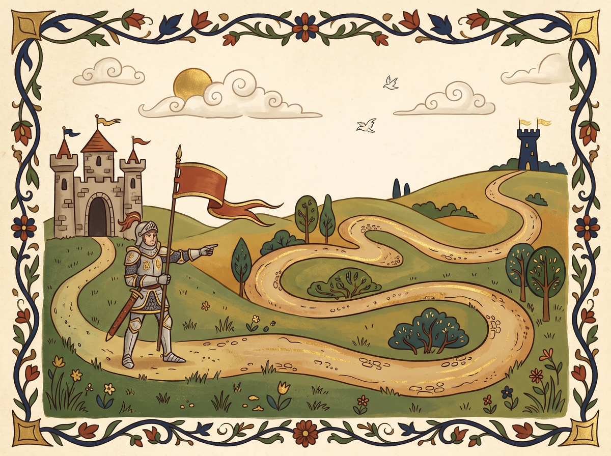
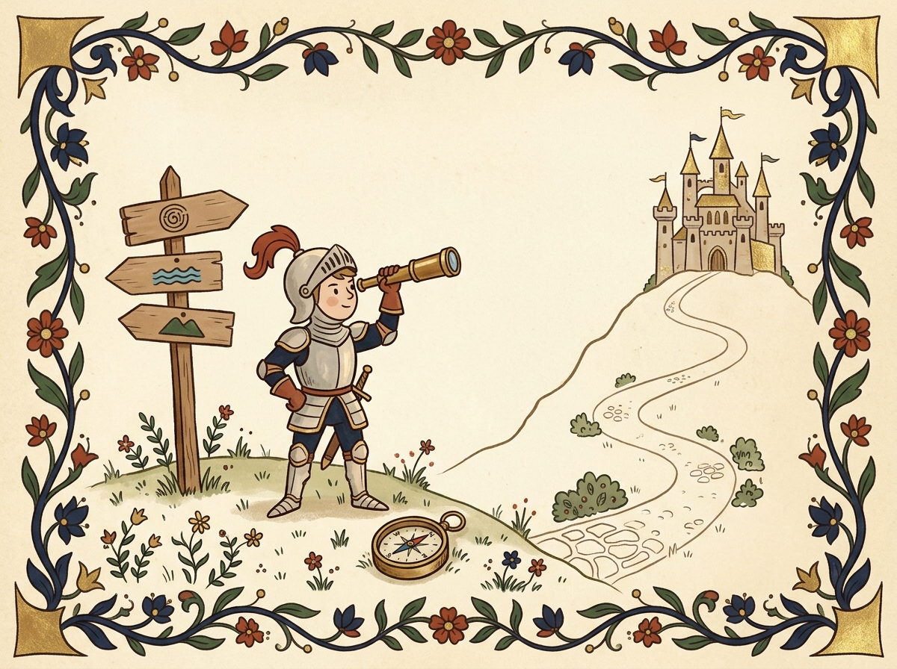
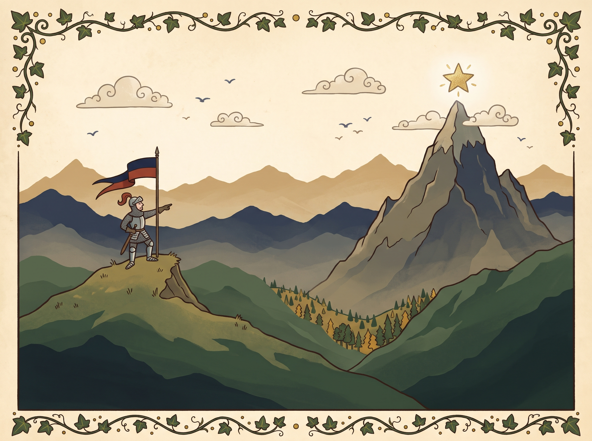
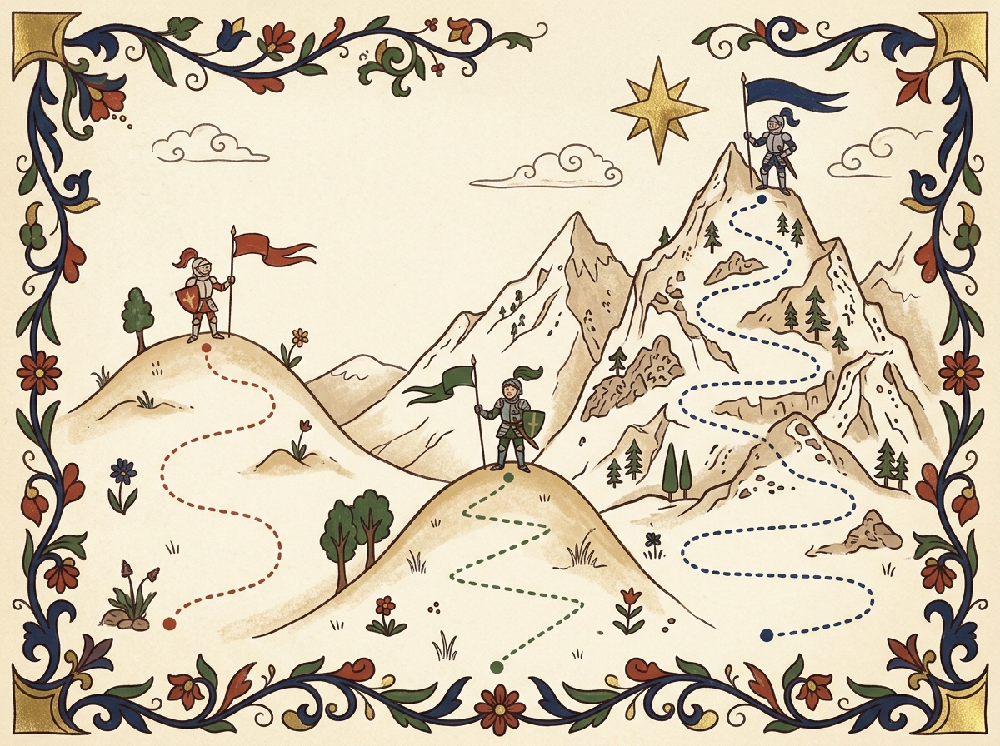
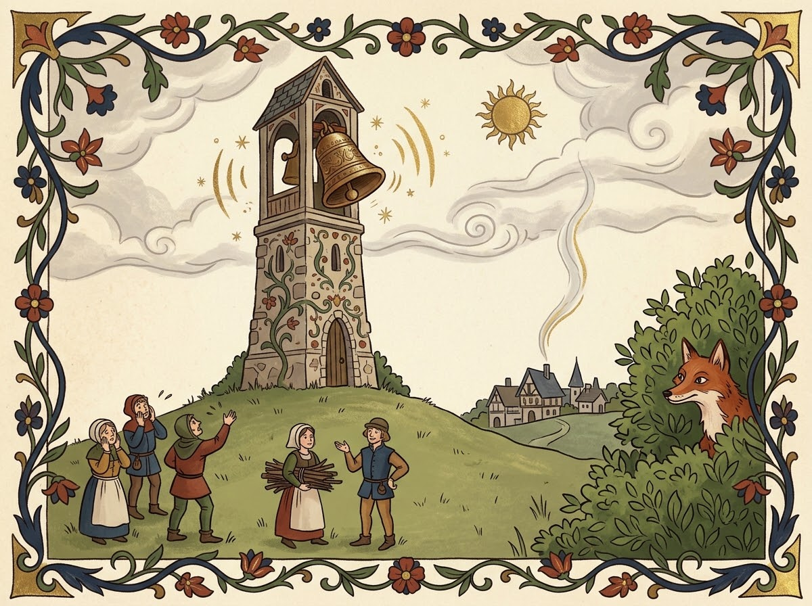
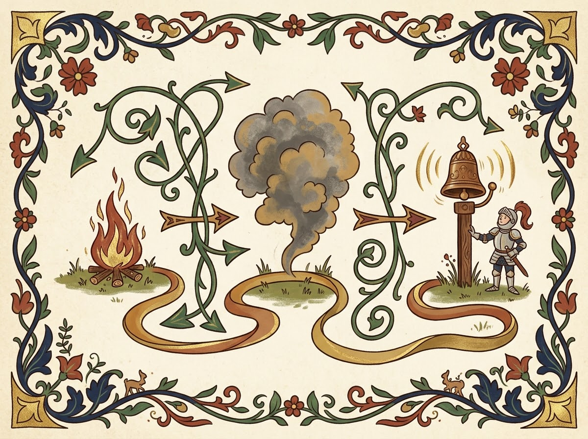
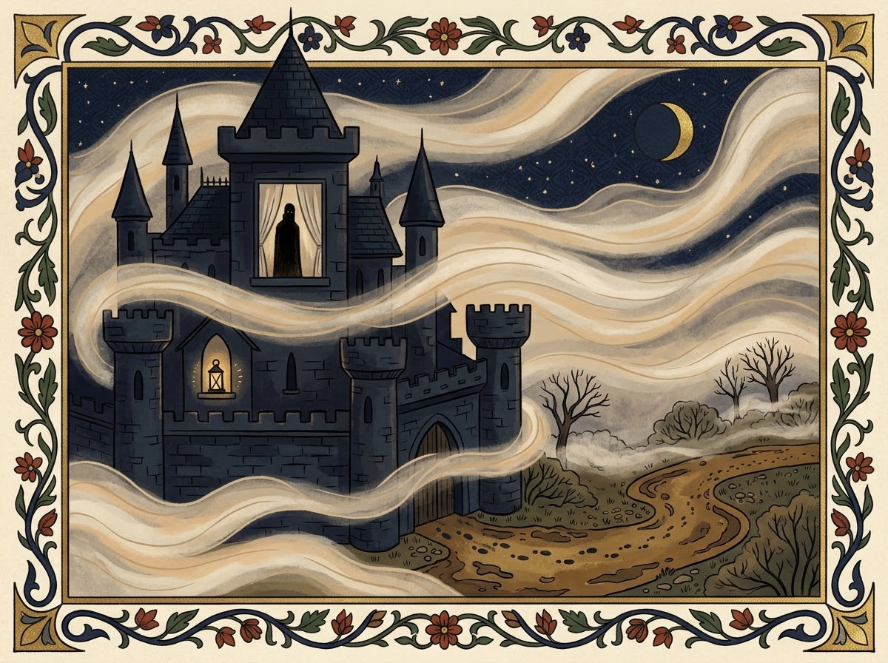
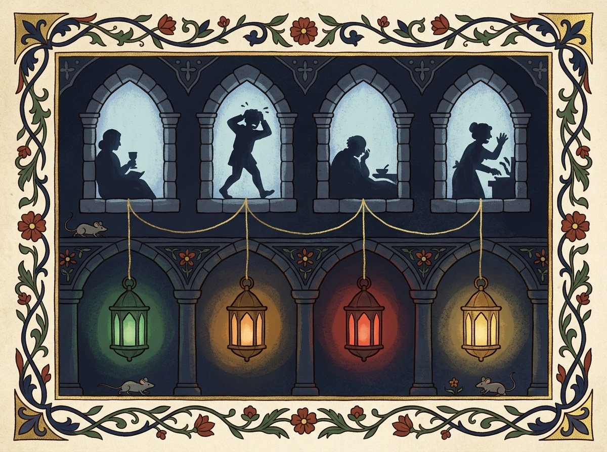
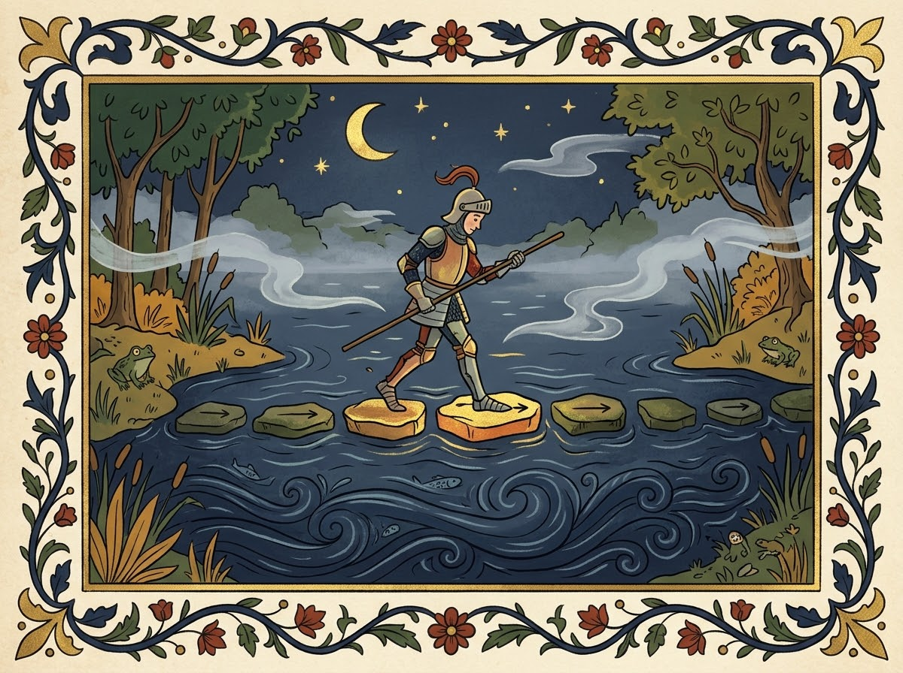

Once upon a time, an agent had to travel from START to GOAL. A story becomes a problem when it has four parts: a state space, a successor function (actions and their costs), a start state and a goal test. The solution is a sequence of actions that leads from START to GOAL.

More than one road leads from START to GOAL.
Every algorithm grows a “what if” tree: the root is the start, the children are the results of actions. There is only one question: which node of the fringe should we expand next?
The algorithms differ only in their fringe policy:
Algorithm
Picks the node
Structure
DFS
deepest
stack (LIFO)
BFS
shallowest
queue (FIFO)
UCS
lowest g(n)
priority queue
A*
lowest g(n)+h(n)
priority queue
The fringe: which branch should we light up first?
f(n) = g(n) + h(n)
g(n) is what we have already paid, h(n) is the estimate of what is left, f(n) is the estimated total. Example: node A (g=4, h=8, f=12) and node B (g=7, h=2, f=9). A* expands B because 9 < 12: it is willing to pay more now for a better total.

A heuristic is a spyglass, not a map.
BFS finds the path with the fewest steps, but not the cheapest one. If edges have different costs, use UCS, and with a good heuristic use A*.
from collections import deque
def bfs(graph, start, goal):
queue = deque([(start, [start])])
while queue:
state, path = queue.popleft() # FIFO
if state == goal:
return path
for nxt in graph[state]:
queue.append((nxt, path + [nxt]))
Chapter ITest of Knowledge
1. Which data structure holds the fringe in BFS?
Not quite. Think about which node BFS takes first: the shallowest one.
Correct: popleft() takes the oldest node, which is the shallowest one.
2. When do BFS and UCS return different paths?
Not quite. BFS counts steps, UCS counts cost.
Correct: BFS counts actions, while UCS counts the total cost g(n).
3. How does A* behave when h(n) = 0 for every node?
Not quite. Substitute h = 0 into f(n) = g(n) + h(n).
Correct: f(n) = g(n), which is exactly the UCS criterion.
Chapter IILocal Search: Climbing the Hill
Sometimes the road does not matter, only the castle we arrive at. Then we search not for a path but for a complete configuration: a placement of queens, a traveling salesman’s route. A configuration has neighbors (small changes) and an objective function, a number we maximize or minimize. Only the current state is stored, so almost no memory is needed.

The landscape: a low peak nearby, a high one far away.
Hill climbing looks at the neighbors and moves to the best one; when none is better, it stops. It is fast, but it falls into traps: a local maximum (a peak lower than the best one), a plateau (everything is equal) and a ridge.
Landscape [1, 4, 7, 5, 3, 6, 9, 8]. From index 0 the algorithm walks 1 → 4 → 7 and stops: both neighbors are worse. But index 6 holds the value 9, the global maximum.

Random restarts: every knight has his own hill.
Random restarts: run hill climbing from different points and keep the best result. Simulated annealing can temporarily accept a worse move: at a high temperature T this happens often, and as the system cools, more and more rarely.
import random, math
def anneal(values, start, T=10):
current = start
while T > 0.1:
nxt = random_neighbor(current)
dE = values[nxt] - values[current]
if dE > 0 or random.random() < math.exp(dE / T):
current = nxt
T *= 0.95 # cooling
return current
Chapter IITest of Knowledge
1. When does hill climbing stop?
Not quite. The algorithm does not know where the global maximum is.
Correct: it only knows its neighbors and stops when there is no improvement.
2. What lets simulated annealing escape a local maximum?
Not quite. Think about the role of the temperature T.
Correct: a worse move is accepted with probability exp(ΔE/T), which falls as the system cools.
3. Hill climbing on [1, 4, 7, 5, 3, 6, 9, 8] starting at index 0 returns the value…
Not quite. Walk through it: 1 → 4 → 7, and then the neighbors are worse.
Correct: 7 is a local maximum, and reaching 9 requires passing through a worse value.
Chapter IIIProbability and Bayesian Networks
A smoke alarm rings. Is there a fire, burnt toast, or just a false alarm? AI almost never sees the world perfectly: sensors are noisy, events have several possible causes, and the same clue can support many stories. Probability tells us how strongly the evidence supports each one.

An alarm is a clue, not a verdict.
A probability is a number from 0 to 1: P = 0.7 means “likely”, not “guaranteed”. A set of outcomes that exclude each other and cover everything always adds up to 1.
A monitor records the temperature (T) and the condition (F) of a machine. The joint distribution lists every combination:
Temperature
Failure
Healthy
High
0.18
0.12
Normal
0.02
0.68
Marginal: add the cells you do not care about. P(Failure) = 0.18 + 0.02 = 0.20.
Conditional: look only at the cases where the condition holds.
P(A | B) = P(A, B) / P(B)
P(Failure | High) = 0.18 / 0.30 = 0.60.
Before the evidence, the chance of failure was 20% (the prior). After seeing a high temperature it is 60% (the posterior). Evidence changes the population we look at.
P(F | A) = P(A | F) · P(F) / P(A)
A factory has 5% faulty machines. The alarm catches 90% of faults, but it also rings for 10% of healthy machines. Out of 1,000 machines: 50 faulty give 45 alarms, 950 healthy give 95 false alarms. So P(Fault | Alarm) = 45 / 140 = 32.14%.
A Bayesian network is a directed graph without loops: a node is a variable, an arrow is a direct influence, and each node has a small probability table (CPT) conditioned on its parents. Here: Fire → Smoke → Alarm.

Causes point to effects; inference can walk backwards.
Node
Table
Fire
P(F) = 0.02
Smoke
P(S | F) = 0.90, P(S | ¬F) = 0.05
Alarm
P(A | S) = 0.95, P(A | ¬S) = 0.01
P(F, S, A) = P(F) · P(S | F) · P(A | S)
Summing out the hidden Smoke gives P(Fire | Alarm) = 0.01712 / 0.07298 ≈ 23.46%. The alarm lifts the chance of fire from 2%, but does not prove it.
Inference answers a question about hidden variables using evidence. The query here is Fire, the evidence is Alarm = yes, and Smoke is hidden.
Method
Idea
Enumeration
sum over every hidden state; exact, good for small networks
Variable elimination
sum out hidden variables early and reuse the factors; exact
Rejection sampling
simulate cases and keep those that match the evidence; wasteful if the evidence is rare
Likelihood weighting
fix the evidence and weight each sample, so nothing is thrown away
Explaining away. The alarm sounds: a burglary becomes likelier. Then we learn that an earthquake happened: the burglary becomes less likely, because the alarm now has another explanation.
Sparse networks stay small: 20 binary variables need 2²⁰ ≈ one million joint entries, but only a few tiny tables if each node has few parents.
Chapter IIITest of Knowledge
1. A machine fails 20% of the time overall, and 60% when the temperature is high. What is 0.60?
Not quite. The condition is what comes after the bar “|”.
Correct: 0.60 = P(Failure | High) = 0.18 / 0.30.
2. Why is P(Fault | Alarm) only about 32% when the alarm detects 90% of faults?
Not quite. Think about the 950 healthy machines.
Correct: 95 false alarms against 45 true ones, so 45 / 140 ≈ 32%.
3. How is the joint probability written in the network Fire → Smoke → Alarm?
Not quite. Each node is conditioned on its parents, and the factors are multiplied.
Correct: one local factor per node, multiplied together.
Chapter IVHidden Markov Models
A sensor reports a measurement, not the whole truth. A machine may be Healthy, Degrading or Faulty, but we only see temperature, vibration and alarms. In a Hidden Markov Model the true state stays hidden and produces noisy observations; one high reading does not prove a fault.

We see the lantern, not the one who carries it.
The Markov assumption: tomorrow depends only on today. The current state summarizes everything needed to predict the next one.
States change with transition probabilities. Each row of the matrix adds up to 1:
import numpy as np
T = np.array([[0.90, 0.10],
[0.20, 0.80]])
p = np.array([0.80, 0.20])
print(p @ T) # [0.76 0.24]
An HMM has three ingredients: initial probabilities π, transitions T and emissions O, which say which readings each hidden state likes to produce.
State
Normal
High
Healthy
0.80
0.20
Faulty
0.30
0.70

Hidden states above, visible clues below.
P(High | Faulty) = 0.70 is not P(Faulty | High). To reverse it, use Bayes. Prior 80/20, reading High: Healthy 0.80 × 0.20 = 0.16, Faulty 0.20 × 0.70 = 0.14, normalize by 0.30, giving 53.3% / 46.7%.
Filtering estimates the current state from all readings so far: predict with T, correct with the emission, normalize. A second High reading:
Predict: [0.533, 0.467] × T = [0.573, 0.427] Correct: [0.573 × 0.20, 0.427 × 0.70] = [0.115, 0.299] Normalize: [0.277, 0.723], so Faulty is now the likelier state.

Viterbi keeps only the best stepping stones.
belief = np.array([.8, .2]); O = np.array([.2, .7])
for t in range(2): # two High readings
if t > 0:
belief = belief @ T # predict
belief = belief * O # correct
belief /= belief.sum() # normalize
print(t + 1, belief.round(3))
The same model answers different questions:
Question
Method
What is happening now?
Filtering: all readings so far
What will happen?
Prediction: p × Tk, no new readings
What was happening then?
Smoothing: earlier and later readings (forward–backward)
Which path was the best?
Viterbi: one most probable state sequence
Sum or max. Forward adds the probability of all predecessor paths and returns state probabilities. Viterbi keeps only the best predecessor, stores backpointers, and returns one complete path.
Limits of a basic HMM: the hidden state follows a first-order Markov process, a reading depends only on the current state, and the probabilities must come from data or experts.
Chapter IVTest of Knowledge
1. What does the emission probability P(High | Faulty) = 0.70 tell us?
Not quite. Emissions describe readings produced by a hidden state.
Correct: the state is the condition, the reading is the outcome.
2. Prior: Healthy 0.60, Faulty 0.40. P(High | Healthy) = 0.20, P(High | Faulty) = 0.70. After one High reading, P(Faulty) is…
Not quite. Multiply prior by likelihood for both states, then normalize.
Correct: 0.28 / (0.12 + 0.28) = 70%.
3. What is the key difference between Forward (filtering) and Viterbi?
Not quite. Think SUM versus MAX.
Correct: same model, different goal.
The Seal of the Book
Signs: 0/0 · Answers: 0/0
To be continued… Next: decisions, ML, unsupervised learning, MDP.